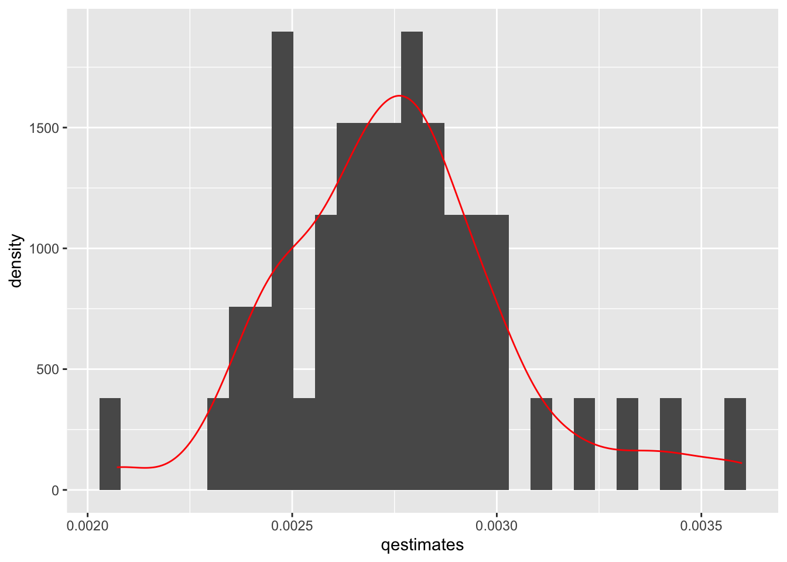

## Load data
mids <- read.table("https://raw.githubusercontent.com/ktmccabe/teachingdata/main/midsshort.txt")
table(mids$Conflict)
0 1
99657 343 This section will provide information about calculating quantities of interest. Often, in linear regression, our coefficients might directly represent the quantities we are interested in interpreting. However, in other models, we might need to do a bit of work to make it easier on our readers (and ourselves).
The quantities of interest you generate should be directly related to your research question and hypotheses. For example, if my hypothesis was about how the competitiveness of a state is related to the probability that someone is contacted by a campaign, then my quantities of interest would involve a comparison of the predicted probability of campaign contact for those in more vs. less competitive states. In contrast, if my hypothesis was about the number of bills passed in a legislature under unified vs. divided government, I would want to express my quantities of interest as a different in counts of bills or rate of bills pasesed.
We will discuss computing quantities of interest, uncertainty for these quantities, and visualization.
We can take something that looks like column 5 in the table from Antoine Banks and Heather Hicks example from the previous section and move it into a figure, as the authors did.


Here are a few external resources that relate to the concepts discussed in this section.
Recall, in linear regression, to get our estimated values \(\hat Y\) we said \(\hat Y = X\hat\beta\).
Let’s use a subset of the MIDs mids.txt data available here.
This dataset has variables related to whether a dyad of states is engaged in a militarized interstate dispute between the two countries in a given year. The variable that will be our outcome of interest is Conflict which takes the values 0 or 1. We will also look at the relationship between a few independent variables and the propensity for conflict. Data are at Dyad Level.
MajorPower, 1=yes, 0=otherwise),Contiguity, 1=yes, 0=otherwise),Allies, 1=yes, 0=otherwise),ForeignPolicy, 1=yes, 0=otherwise)BalanceofPower: balance of military powerYearsSince: the number of years since the last dispute## Load data
mids <- read.table("https://raw.githubusercontent.com/ktmccabe/teachingdata/main/midsshort.txt")
table(mids$Conflict)
0 1
99657 343 As can be seen from the table above, conflicts (fortunately) are relatively rare in our data. This means are predicted probabilities are likely going to be pretty small in this example.
We will run a logistic regression with a few covariates.
out.logit <-glm(Conflict ~ MajorPower + Contiguity + Allies + ForeignPolicy +
BalanceOfPower + YearsSince,
family = binomial(link = "logit"), data = mids)Our logistic regression equation is:
Our coefficients are in the “logit” aka log-odds scale of the linear predictor, so we use the response function to put them into probability estimates.
For logistic regression, we can generate predicted probabilities for each \(Y_i\) using the
predict(model, type="response") function, using theplogis function with \(X\hat \beta\), or
We use the predict function exactly the same way as before, but the key argument we need to specify is type. If you have type = link this generates answers that are still on the log-odds linear predictor scale. It is switching this to response that goes into probability in the logit case or probit case.
Example
First, let’s just generate predicted probabilities for each observation in our data, without specifiying any designated values for \(X\)– just keeping the values as they are in the data aka “as observed.”
## Method with predict()
## When you don't specify newdata, R assumes you want the X data from the model
pp <- predict(out.logit, type = "response")
## Manual way #1
X <- model.matrix(out.logit)
bh <- coef(out.logit)
pplogis <- plogis(X %*% bh)
## Manual way # 2
ppexp <- exp(X %*% bh)/(1 + exp(X %*% bh))
## Compare the first five rows of each to see they are the same
cbind(pplogis, ppexp, pp)[1:5,] pp
78627 0.0004204501 0.0004204501 0.0004204501
295818 0.0001035526 0.0001035526 0.0001035526
251841 0.0006211178 0.0006211178 0.0006211178
98068 0.0004270812 0.0004270812 0.0004270812
209797 0.0001005396 0.0001005396 0.0001005396The code above generates a predicted probability associated with each observation in the data. This is similar to generating a fitted value \(\hat y\) for each observation in OLS.
Usually in social science we have hypotheses about how the predicted probabilities change as one or more of our independent variables change. We will now turn to calculating predicted responses according to specific values of the independent variables.
Recall, sometimes in linear regression, we wanted to calculate a specific estimated value of \(\hat Y_i\) for when we set \(X\) at particular values. (e.g., What value do we estimate for \(Y\) when \(X1 = 2\) and \(X2=4\)?)
Here, we can do the same for GLMs by setting specific values for \(X\) when we apply the \(Link^{-1}\) response function.
Example 1
Example using the Conflict data using different approaches in R.
## Predicted probability when Allies = 1, and all other covariates = 0
allies1 <- predict(out.logit, newdata =
data.frame( MajorPower = 0,
Contiguity = 0,
Allies = 1,
ForeignPolicy = 0,BalanceOfPower = 0,
YearsSince = 0),
type = "response")
allies1 1
0.002632504 ## for allies = 1, careful of the order to make same as coefficients
X <- cbind(1, 0, 0, 1, 0, 0 , 0)
Bh <- coef(out.logit)
## Approach 1
plogis(X %*% bh) [,1]
[1,] 0.002632504## Approach 2
exp(X%*% bh)/(1 + exp(X%*% Bh)) [,1]
[1,] 0.002632504Example 2
Second example keeping X at observed values. Here the manual approach is easier given the limitations of predict (at least until we learn a new package). Now we are estimating \(N\) predicted probabilities, so we take the mean to get the average estimate.
## for allies = 1careful of the order to make same as coefficients
X <- model.matrix(out.logit)
X[, "Allies"] <- 1 # change Allies to 1, leave everything else as is
Bh <- coef(out.logit)
## Approach 1
mean(plogis(X %*% bh))[1] 0.002759902## Approach 2
mean(exp(X%*% bh)/(1 + exp(X%*% Bh)))[1] 0.002759902This is the average predicted probability of having a dispute when the dyad states are Allies, holding other covariates at their observed values.
Here is a brief video with a second example of the process above, leading into the discussion of marginal effects below. It uses the anes data from Banda and Cassese in section 6.
Recall, in linear regression a one-unit change in \(X_k\) is associated with a \(\hat \beta_k\) change in \(Y\) no matter where we are in the domain of \(X_k\). (The slope of a line is constant!)
The catch for glm’s, again, is that our linear predictor (\(\eta\)) is often not in the units of \(Y\) that we want. E.g., In logistic regression, a one-unit change in \(X_k\) is associated with a \(\hat \beta_k\) logits change
You can generate predictions based on any values. Here are three common approaches for understanding the marginal effect of a particular variable \(X_k\).
Wait, what do we mean by marginal effects?
In this approach, when we calculate the difference in predicted probability resulting from a one-unit change in \(X_k\), we set all other covariates \(X_j\) for \(j \neq k\) at their mean values.
In this approach, when we calculate the difference in predicted probability resulting from a one-unit change in \(X_k\), we set all other covariates \(X_j\) for \(j \neq k\) at values that are of theoretical interest. This could be the mean value, modal vale, or some other value that makes sense for our research question.
The example above where we held all other covariates at zero would be an example of calculating marginal effects at representative values.
In this approach, when we calculate the difference in predicted probability resulting from a one-unit change in \(X_{ik}\), we hold all covariates \(X_{ij}\) for \(j \neq k\) at their observed values.
Here is an example for average marginal effects. Let’s sat we were interested in the difference in probability of a dispute for Allies vs. non-Allies, when all other covariates are zero. We can do this manually or in predict.
## Extract beta coefficients
Bh <- coef(out.logit)
## Set Allies to 1, hold all other covariates as observed
X1 <- model.matrix(out.logit)
X1[, "Allies"] <- 1
## Set Allies to 0, hold all other covariates as observed
X0 <- model.matrix(out.logit)
X0[, "Allies"] <- 0
pp1 <- mean(plogis(X1 %*% Bh))
pp0 <- mean(plogis(X0 %*% Bh))
pp1 - pp0[1] -0.0009506303This represents the average difference in predicted probability of having a dispute for Dyads that are Allies vs. not Allies.
marginaleffects, prediction and margins packages.There are functions that can make this easier so long as you understand what they are doing.
One package developed by Dr. Thomas Leeper is prediction. A second is margins. Documentation available here and here. More recently, Vincent Arel-Bundock has developed the marginaleffects package, which has more expansive functionality here.
It is always important to understand what’s going on in a package because, for one, it’s possible that the package will stop being updated, and you will have to find an alternative solution.
marginaleffectsWe first look at the marginaleffects package. The predictions function generates specific quantities of interest. An advantage it has over the built-in predict function is that it makes it easier to “hold all other variables at observed values.” In the predictions function, you specify the designated values for particular variables, and then by default, it assumes you want to hold all other variables at observed values. Here is an example of generating predicted probabilities for Allies = 1 and Allies = 0. It will generate the summary means of these two predictions.
library(marginaleffects)
preout <- predictions(
out.logit,
type = "response",
by = "Allies",
newdata = datagridcf(Allies = 0:1))The datagridcf argument stands for a counterfactual dataset, where we are keeping the data as they are observed, but counterfactually changing Allies from 0 to 1. By putting type="response", we make sure our results are in terms of predicted probabilities.
We can then conduct comparisons using the comparison or avg_comparisons functions, looking at, for example, the average difference in predicted probability, going from Allies being 0 to 1, keeping all covariates at their observed values.
comp <- comparisons(out.logit,
variables = list(Allies = c(0, 1)))
mean(comp$estimate)[1] -0.0009506303comp_avg <- avg_comparisons(out.logit,
variables = list(Allies = c(0, 1)))
comp_avg$estimate[1] -0.0009506303predictionHere we will focus on the prediction package. The prediction function generates specific quantities of interest. An advantage it has over the built-in predict function is that it makes it easier to “hold all other variables at observed values.” In the prediction function, you specify the designated values for particular variables, and then by default, it assumes you want to hold all other variables at observed values. Here is an example of generating predicted probabilities for Allies = 1 and Allies = 0. It will generate the summary means of these two predictions.
## install.packages("prediction")
library(prediction)
## By default, allows covariates to stay at observed values unless specified
prediction(out.logit, at = list(Allies = c(0, 1)),
type = "response")Data frame with 200000 predictions from
glm(formula = Conflict ~ MajorPower + Contiguity + Allies + ForeignPolicy +
BalanceOfPower + YearsSince, family = binomial(link = "logit"),
data = mids)
with average predictions: Allies x
0 0.003711
1 0.002760## compare with the manual calculated values above
pp0[1] 0.003710532pp1[1] 0.002759902glm\(Pr(Conflict_i = 1 | X) = logit^{-1}(\alpha + \beta_1 * Allies_i + \beta_2 * MajorPower_i + \beta_3 * ForeignPolicy_i)\)
What is the predicted probability of entering a dispute when the dyad includes a major power, holding all covariates at observed values?
Repeat the previous exercise, but now use probit. How similar/different are the predicted probability estimates?
## Problem 1
out.logit2 <- glm(Conflict ~ Allies + MajorPower + ForeignPolicy, data=mids,
family = binomial(link = "logit"))
## Problem 2
library(prediction)
prediction(out.logit, at = list(MajorPower = 1),
type = "response")Data frame with 100000 predictions from
glm(formula = Conflict ~ MajorPower + Contiguity + Allies + ForeignPolicy +
BalanceOfPower + YearsSince, family = binomial(link = "logit"),
data = mids)
with average prediction: MajorPower x
1 0.007745## Problem 3
out.probit <- glm(Conflict ~ Allies + MajorPower + ForeignPolicy, data=mids,
family = binomial(link = "probit"))
prediction(out.probit, at = list(MajorPower = 1),
type = "response")Data frame with 100000 predictions from
glm(formula = Conflict ~ Allies + MajorPower + ForeignPolicy,
family = binomial(link = "probit"), data = mids)
with average prediction: MajorPower x
1 0.01451## Manual approach
X <- model.matrix(out.probit)
X[, "MajorPower"] <- 1
Bhat <- coef(out.probit)
mean(pnorm(X %*% Bhat))[1] 0.01450613Usually, we want to report a confidence interval around our predicted probabilities, average predicted probabilities, or around the difference in our predicted probabilities or difference in our average predicted probabilities.
This is different from the uncertainty of a coefficient, which we already have from our glm output. Here, if we say there is a 0.01 probability of a dispute, that is just an estimate, it is going to vary over repeated samples. We want to generate a confidence interval that represents this variability in \(\hat \pi\).
We have already discussed using the predict function in lm to generate confidence intervals for OLS estimates. In a limited set of cases, we can also use this shortcut for glm by taking advantage of the distribution being approximately normal on the scale of the linear predictor. When we are estimating confidence intervals around 1) one or multiple single quantities of interest (a predicted probability, as opposed to a difference in predicted probability) 2) where the \(X\) values are set at specific values (and not at their observed values) then, we can plug this into the predict function in the following way:
link linear predictor scale.
qnorm().Here is an example:
## Predicted probability when Allies = 1 and all other covariates = 0
## Note type = "link"
allies1.link <- predict(out.logit, newdata =
data.frame( MajorPower = 0,
Contiguity = 0,
Allies = 1,
ForeignPolicy = 0,BalanceOfPower = 0,
YearsSince = 0),
type = "link", se = T)
allies1 <- plogis(allies1.link$fit)
allies1.lb <- plogis(allies1.link$fit - qnorm(.975)*allies1.link$se.fit)
allies1.ub <- plogis(allies1.link$fit + qnorm(.975)*allies1.link$se.fit)
## Confidence interval
c(allies1, allies1.lb, allies1.ub) 1 1 1
0.002632504 0.001302711 0.005312514 ## By hand (using x as a k x 1 vector)
x.c <- rbind(1, 0, 0, 1, 0, 0, 0)
se.hand <- sqrt(t(x.c) %*% vcov(out.logit) %*% x.c)
p.hand <- t(x.c) %*% coef(out.logit)
allies1.hand <- plogis(p.hand)
allies1.hand.lb <- plogis(p.hand- qnorm(.975)*se.hand)
allies1.hand.ub <- plogis(p.hand + qnorm(.975)*se.hand)
c(allies1.hand, allies1.hand.lb, allies1.hand.ub)[1] 0.002632504 0.001302711 0.005312514Beyond this simple case, there are three general approaches to calculating the uncertainty of the quantities of interest. Here is a video with an overview of these three processes. The course notes contain additional detail below. It continues with the anes data example from Banda and Cassese in section 6, as did the other video in this section.
For now, we will focus on the second two methods, but some statistical software programs will report uncertainty estimates based on the Delta method. Here is more information on this method and the deltamethod function in R.
Bootstrapping simulates the idea of conducting repeated samples to generate a distribution of estimates of your quantity of interests. We “resample” from our existing data to generate thousands of new datasets, and use each dataset to generate a slightly different quantity of interest. This distribution is then used to construct the confidence interval.
Process:
Why? How does this work?
This would be a good place to review the Bootstrap resources at the front of the section:
How do we implement this procedure?
Example
Find the point estimate and 95% CI for the average predicted probability of conflict when the dyad are allies and all other covariates are held at observed values
## Original regression
out.logit <-glm(Conflict ~ MajorPower + Contiguity + Allies + ForeignPolicy +
BalanceOfPower + YearsSince,
family = binomial(link = "logit"), data = mids)
## We need to build our bootstrap procedure
## Let's assume we just want 1 iteration
## Step 1: sample to generate new data
## this selects N row numbers from mids, with replacement
wrows <- sample(x =1:nrow(mids), size = nrow(mids), replace = T)
## Create subset of data based on these rows
subdata <- mids[wrows, ]
## Step 2: run your regression model with the new data
boot.logit <-glm(Conflict ~ MajorPower + Contiguity + Allies + ForeignPolicy +
BalanceOfPower + YearsSince,
family = binomial(link = "logit"), data = subdata)
## Step 3: generate average predicted probability
Xboot <- model.matrix(boot.logit)
Xboot[, "Allies"] <- 1
Bh <- coef(boot.logit)
p.boot <- mean(plogis(Xboot %*% Bh))Let’s say we have a dataframe of different colors and shapes.
somedata <- data.frame(colors = c("red", "blue", "yellow", "green",
"purple", "orange", "black"),
shapes = c("circle", "square", "triangle",
"rectangle", "diamond", "line", "sphere"))
somedata colors shapes
1 red circle
2 blue square
3 yellow triangle
4 green rectangle
5 purple diamond
6 orange line
7 black sphereI could generate a new “resampled” dataset with the sample function. We tell the function three things: 1) choose from the row numbers in my dataframe (1:nrow(somedata)), 2) pick \(N\) row numbers in total (nrow(somedata)), 3) Each time you pick a given row number \(i\), put it back in the data, allowing the possibility that you may randomly sample it again (replace = TRUE).
sample(1:nrow(somedata), nrow(somedata), replace = TRUE)[1] 2 1 6 3 2 5 1sample(1:nrow(somedata), nrow(somedata), replace = TRUE)[1] 1 4 6 2 1 2 4sample(1:nrow(somedata), nrow(somedata), replace = TRUE)[1] 3 4 7 6 2 2 5What happened is the function generated a set of row numbers. Note how it is possible for the same row number to be picked multiple times. Each time we run the sample function, we get slightly different row numbers.
We can subset our data based on these row indices.
## store row indices
wrows <- sample(1:nrow(somedata), nrow(somedata), replace = TRUE)
wrows[1] 4 5 4 7 7 2 6## subset data to include rows sampled
## note if row indices are in wrows more than once, they will also be in the subset more than once
subdata <- somedata[wrows,]
subdata colors shapes
4 green rectangle
5 purple diamond
4.1 green rectangle
7 black sphere
7.1 black sphere
2 blue square
6 orange lineGiven that each time the sample function runs, we get slightly different random samples of the data, that’s how we end up with a distribution of slightly different estimates of our quantities of interest. Each time the regression is run with a slightly different dataset.
This gives us one estimate of the average predicted probability stored in p.boot. However, the idea of a bootstrap is that we repeat this procedure at least 1000 times to generate a distribution of estimates of the quantity of interest, the average predicted probability in this case.
We could literally repeat that code chunk 1000 times…. but, we have better things to do than that much copy/paste. Instead, we will create a function that will do this automatically.
To do so, we are going to wrap our procedure above inside the syntax for creating functions in R. In R, to create a function,
myboot. You could call yours anything.)myboot <- function(){}.function() part, you tell R what you are going to supply the function each time you want it to run. Sometimes functions only have one input, others like lm have multiple inputs.
mean(x), we always supply that function with a vector of values.df.{} is the procedure from above. All we do is
mids, we keep it generic by writing df.return() as the output of the function. Here, we want it to return the average predicted probability.## We need to build our bootstrap function
## Step 4: Let's wrap our current steps into a function that we can replicate
## Note: all we need as an input is our data.frame mids
## I will label it something generic to show how a function can work
myboot <- function(df){
wrows <- sample(x =1:nrow(df), size = nrow(df), replace = T)
## Create subset of data based on these rows
subdata <- df[wrows, ]
## Step 2: run your regression model with the new data
boot.logit <-glm(Conflict ~ MajorPower + Contiguity + Allies + ForeignPolicy +
BalanceOfPower + YearsSince,
family = binomial(link = "logit"), data = subdata)
## Step 3: generate average predicted probability
Xboot <- model.matrix(boot.logit)
Xboot[, "Allies"] <- 1
Bh <- coef(boot.logit)
p.boot <- mean(plogis(Xboot %*% Bh))
return(p.boot)
}Note: here, our quantity of interest is the predicted probability of a dispute when the dyad are Allies. Let’s say, instead, we wanted the difference in predicted probability of a dispute between Allies and Non-Allies. Well, we would just adjust our function to calculate the mean probabilities for Allies and Non-Allies and return the difference in these means as the quantity of interest. We would then get 10000 estimates of this difference in probabilties.
Now that we have the function from above, instead of copying/pasting this 1000 times, we will use the function called replicate which will do this for us. We indicate the number of estimates we want and then indicate which function (and in our case, which dataframe inside the function) we want to replicate.
## This may take a minute to run.
## We will do just 50, Normally you will want this to be more like 1000
set.seed(1234) # this helps us get the same results each time, good for reproducibility
myestimates <- replicate(50, myboot(mids))The bootstrapping approach is very computationally demanding given it has to repeat an operation several (thousand) times. After you hit “run,” just sit back, relax and wait for the water to run dry.
If you get an error message at the replicate(1000, myboot(mids)) stage, it is best to see if your function runs at all. Try just the below to see if it generates output:
myboot(mids)[1] 0.002250429If you get the error here, then it means there is a bug within the function code, not the replicate code.
Each time we replicate the function, it will generate slightly different results because the sample functions is randoming sampling rows of data each time. We can plot the distribution of estimates to show this.
library(ggplot2)
ggplot(data.frame(x = myestimates), aes(x = myestimates)) +
geom_histogram(aes(y=..density..)) + geom_density(color="red")Warning: The dot-dot notation (`..density..`) was deprecated in ggplot2 3.4.0.
ℹ Please use `after_stat(density)` instead.`stat_bin()` using `bins = 30`. Pick better value with `binwidth`.The final step after generating the bootstrap distribution of estimates is to use it to construct a confidence interval for the quantity of interest. There are a few ways to do this.
In each approach, we take our original “point estimate” from the computation of the quantity of interest from our original data and use the bootstrap estimates for the lower and upper bounds of the confidence interval. Here we will assume we want a 95% confidence interval.
## Find the original point estimate
Bh <- coef(out.logit)
X1 <- model.matrix(out.logit)
X1[, "Allies"] <- 1
pe1 <- mean(plogis(X1 %*% Bh))
## Normal
c((pe1 - qnorm(.975)*sqrt(var(myestimates))),(pe1 + qnorm(.975)*sqrt(var(myestimates))))[1] 0.002174802 0.003345002## Percentile
quantile(myestimates, c(0.025, .975)) 2.5% 97.5%
0.002275356 0.003431285 ## Bias correction
bc <- 2*pe1 - myestimates
quantile(bc, c(0.025, .975)) 2.5% 97.5%
0.002088520 0.003244449 Each of these is pretty commonly used, but they may generate slightly different results.
Quasi-Bayesian or simulated confidence intervals take advantage of the large sample properties of our estimates \(\hat \beta\) having a Normal sampling distribution due to the Central Limit Theorem.
Like the bootstrap, the simulation procedure also generates hypothetical new samples. However, here, we are sampling new \(\hat \beta\) estimates each time instead of sampling a new underlying dataset each time. This allows use to skip the step of generating a new dataset and running the regression 1000 times. Here, we just run the regression model once. The simulation process takes place after this step.
Process
optim or glm)vcov of \(\hat \beta\) to generate the uncertaintyrbinom function below.This would be a good place to review the resources from Gary King:
Example
The code for this approach will more simple in a case where we are computing quantities of interest when covariates are held at means or representative values (cases where we get just one predicted probability associated with each set of \(X\) values). It will look a little more complex in cases where we want to hold covariates at observed values and calculate the average predicted probability.
First, let’s find the point estimate and 95% CI for the predicted probability of conflict when the dyad are Allies, and all other covariates are held at zero.
## install.packages("mvtnorm")
library(mvtnorm)
## Step 2: Sample 1000 new Bhs (we will use 50 for this example)
## This uses the multivariate normal distribution for resampling
set.seed(1234)
numsims <- 50
qb.beta <- rmvnorm(numsims, coef(out.logit), vcov(out.logit))
## This generates numsims X k coefficients matrix
## Step 3: Iterate through the estimates
## Create an empty vector to store 1000 quantities of interest
qestimatessimple <- rep(NA, numsims)
## Here, our covariate matrix stays the same each time
## We have a 1 for intercept and 1 for Allies, everything else at zero
X1 <- cbind(1, 0, 0, 1, 0, 0 , 0)
## X1 is a 1 X k matrix
## Use a loop to iterate through each set of betas
for(i in 1:numsims){
## for each set of betas, calculate p probs
## for a given set of betas, this gives us nrow(X1) predicted probabilities
pestimate <-plogis(X1 %*% qb.beta[i,])
## Fundamental uncertainty
## not required for logit/probit, but we will show how
## rbinom generates 1000 0's or 1's based on the predicted probability
## We use rbinom bc of the bernoulli, other glm's will have other distributions
## then we take the mean to get our estimate of the predicted probability
moutcome <- mean(rbinom(numsims, 1, pestimate))
qestimatessimple[i] <-moutcome
## repeat for set of simulated betas
}
## Step 4: Similar to bootstrap distribution, find CI using the percentiles
quantile(qestimatessimple, c(0.025, 0.975)) 2.5% 97.5%
0.00 0.02 For more information on loops in R, you can follow this tutorial we created for 2020 SICSS-Rutgers.
rbinom is the random generation function for the binomial distribution. If we supply it with number of trials (in the Bernoulli, this is 1), and a probability of success, it will generate our desired number of outcomes according to this distribution.
For example, let’s say we wanted to generate a random set of 100 coin flips for a coin that is fair– where the probability of success is .5. We will get a sample of 0’s and 1’s. If we take the mean, it will be close to .5, and with enough coin flips, will converge on .5.
rb.res <- rbinom(100, 1, .5)
rb.res [1] 0 1 0 0 0 0 1 0 0 0 1 0 1 1 0 1 0 1 0 0 1 0 1 0 1 1 0 1 0 1 0 1 1 1 1 0 0
[38] 0 0 0 0 1 1 1 1 0 1 0 1 0 1 1 0 1 1 0 0 0 0 0 0 1 1 0 0 1 0 1 0 0 0 0 1 1
[75] 1 1 1 1 0 0 1 0 1 0 0 1 0 1 1 0 1 1 1 1 1 1 0 1 0 0mean(rb.res)[1] 0.49In logit/probit, this step is unneccessary because the \(\mathbb{E}(y_i) = \pi_i\). When we take the mean of our rbinom estimates, we are just going to recover the probability we supplied to it.
However, in other cases, Jensen’s inequality may apply, which states that \(\mathbb{E}[g(X)] \neq g(\mathbb{E}[X])\). For example, if we have an outcome that is distributed according to the exponential distribution: Here, the \(\theta\) is \(\lambda\) where \(\lambda = \frac{1}{e^{X\beta}}\) but \(\mathbb{E}(y)= \frac{1}{\lambda}\). Unfortunately, \(\mathbb{E}(\frac{1}{\hat \lambda}) \neq \frac{1}{\mathbb{E}(\hat \lambda)} = \frac{1}{\mathbb{E}(e^{X\beta})}\). For that example, the rexp() step in this case would be essential.
If we’re not sure when Jensen’s inequality will apply, we can just keep the fundamental uncertainty step as part of the process.
Find the point estimate and 95% CI for the average predicted probability of conflict when the dyad are allies and all other covariates are held at observed values. Here, the code is more complicated, because every time we generate a predicted probability (for any observed value), we need to go through the fundamental uncertainty step (when applicable).
## install.packages("mvtnorm")
library(mvtnorm)
## Step 2: Sample 1000 new Bhs (we will use 50 for this example)
## This uses the multivariate normal distribution for resampling
set.seed(1234)
numsims <- 50
qb.beta <- rmvnorm(numsims, coef(out.logit), vcov(out.logit))
## This generates numsims X k coefficients matrix
## Step 3: Iterate through the estimates
## Create an empty vector to store 1000 quantities of interest
qestimates <- rep(NA, numsims)
## Here, our covariate matrix stays the same
X1 <- model.matrix(out.logit)
X1[, "Allies"] <- 1
## Use a loop to
for(i in 1:numsims){
## for each set of betas, calculate p probs
## for a given set of betas, this gives us nrow(X1) predicted probabilities
pestimates <-plogis(X1 %*% qb.beta[i,])
## Fundamental uncertainty
## not required for logit/probit, but we will show how
## generate empty vector for outcomes
moutcomes <- rep(NA, numsims)
## for each probability estimate, calculate the mean of simulated y's
for(j in 1:length(pestimates)){
## rbinom generates 1000 0's or 1's based on the predicted probability
## We use rbinom bc of the bernoulli, other glm's will have other distributions
## then we take the mean to get our estimate of the predicted probability for a given observation
moutcomes[j] <- mean(rbinom(numsims, 1, pestimates[j]))
}
## take the mean of the predicted probability estimates across all observations
qestimates[i] <- mean(moutcomes)
## repeat for set of simulated betas
}
## Step 4: Similar to bootstrap distribution, find CI using the percentiles
quantile(qestimates, c(0.025, 0.975)) 2.5% 97.5%
0.00232977 0.00344796 Because the shortcut applies where we do not need to calculate fundamental uncertainty in the logit / probit case, we can simplify this to:
## install.packages("mvtnorm")
library(mvtnorm)
## Step 2: Sample 1000 new Bhs (we will use 50 for this example)
## This uses the multivariate normal distribution for resampling
set.seed(1234)
numsims <- 50
qb.beta <- rmvnorm(numsims, coef(out.logit), vcov(out.logit))
## This generates numsims X k coefficients matrix
## Step 3: Iterate through the estimates
## Create an empty vector to store 1000 quantities of interest
qestimates <- rep(NA, numsims)
## Here, our covariate matrix stays the same
X1 <- model.matrix(out.logit)
X1[, "Allies"] <- 1
for(i in 1:numsims){
pestimates <-plogis(X1 %*% qb.beta[i,])
qestimates[i] <- mean(pestimates)
}
## Step 4: Similar to bootstrap distribution, find CI using the percentiles
quantile(qestimates, c(0.025, 0.975)) 2.5% 97.5%
0.002314344 0.003419644 We can also plot the distribution of estimates
library(ggplot2)
ggplot(data.frame(x = qestimates), aes(x = qestimates)) +
geom_histogram(aes(y=..density..)) + geom_density(color="red")`stat_bin()` using `bins = 30`. Pick better value with `binwidth`.
Now that we have our point estimates of our quantities of interest and our confidence intervals, we can kick it up a notch by visualizing these results.
Let’s plot our predicted probability when Allies = 1 with percentile Quasi-Bayesian CI’s and Bias-Corrected Bootstrap CI’s
plot(x = 1:2, y= c(pe1, pe1),
ylim = c(0, .004),
xlim = c(0.5, 2.5),
pch = 20, cex = 1.6,
main = "Average Predicted Probability of Dispute when Allies",
cex.main = .7, cex.lab = .7, cex.axis = .7,
ylab = "Predicted Probability",
xlab = "",
xaxt = "n") # removes x-axis
# add lines from c(x1, x2) on the x-axis and from c(y1, y2) on the y-axis
# note, we don't want any horizontal movement, so we keep x1 and x2 the same c(1,1)
lines(c(1,1), c(quantile(qestimates, c(0.025, 0.975))), lwd = 1.5)
lines(c(2,2), c(quantile(bc, c(0.025, .975))), lwd = 1.5)
# add text a
text(c(1, 2), c(0.001, 0.001), c("Quasi-Bayesian", "BC Bootstrap"), cex = .7 )Here is the same but in ggplot form.
## ggplot works best if you create a dataframe of the data you want to plot
myg <- data.frame(rbind(c(pe1, quantile(qestimates, c(0.025, 0.975))),
c(pe1, quantile(bc, c(0.025, .975)))))
colnames(myg) <- c("pp", "qb", "bc")
myg pp qb bc
1 0.002759902 0.002314344 0.003419644
2 0.002759902 0.002088520 0.003244449## now provide this dataframe to ggplot
ggplot(myg, aes(x = 1:nrow(myg), y = pp))+
geom_point(stat = "identity", size = 3) +
geom_errorbar(data=myg, aes(x =1:nrow(myg),
ymin = qb, ymax = bc),
width = 0, size = 1.1) +
xlim(.5, 2.5) +
ylim(0, .005) +
theme(axis.title.x=element_blank(),
axis.text.x=element_blank(),
axis.ticks.x=element_blank(),
plot.title = element_text(hjust = 0.5)) +
ylab("Predicted Probability") +
ggtitle("Average Predicted Probability of Dispute when Allies") +
annotate("text", x = c(1,2), y = .004, label = c("Quasi-Bayesian", "BC Bootstrap"))Warning: Using `size` aesthetic for lines was deprecated in ggplot2 3.4.0.
ℹ Please use `linewidth` instead.There are a few R packages that help generate these quantities of interest AND estimate uncertainty. If you understand what is going on underneath the packages, then you should feel free to use them to avoid manually coding up each process.
The Marginal Effects Zoo is from Vincent Arel-Bundock. It is a relatively new package marginaleffects that computes a variety of quantities of interest. You can install the package below:
install.packages("marginaleffects")As discussed above, we can generate specific estimates from designated values of our covariates of interest, holding all other covariates at their observed values.
library(marginaleffects)
preout <- predictions(
out.logit,
type = "response",
by = "Allies",
newdata = datagridcf(Allies = 0:1))We can then conduct comparisons using the avg_comparisons function, looking at, for example, the average difference in predicted probability, going from Allies being 0 to 1, keeping all covariates at their observed values. Note that the avg_comparisons function returns standard errors and p-values. These are calculated through the delta method by default.
comp_avg <- avg_comparisons(out.logit,
variables = list(Allies = c(0, 1)))
comp_avg
Term Contrast Estimate Std. Error z Pr(>|z|) S 2.5 % 97.5 %
Allies 1 - 0 -0.000951 0.000403 -2.36 0.0184 5.8 -0.00174 -0.00016
Columns: term, contrast, estimate, std.error, statistic, p.value, s.value, conf.low, conf.high
Type: response This package is useful for generating confidence intervals around single quantities of interest. The package below (margins) is better for constructing confidence intervals around the difference between quantities of interest.
library(prediction)
preout <- prediction(out.logit, at = list(Allies = c(0, 1)),
type = "response", calculate_se = T)
summary(preout) at(Allies) Prediction SE z p lower upper
0 0.003711 0.0002270 16.343 4.878e-60 0.003266 0.004156
1 0.002760 0.0003135 8.804 1.322e-18 0.002145 0.003374I believe prediction relies on the delta method for uncertainty. The others below will have options for simulations or bootstrapped standard errors.
Thomas Leeper developed a package called margins which is modeled after the Stata margins command. Here is some documentation for this package.
We first fit a regression model like normal.
out <- glm(Conflict ~ MajorPower + Contiguity + Allies + ForeignPolicy +
BalanceOfPower + YearsSince, data=mids, family=binomial(link = "logit"))Open the package and use the margins command. It is similar to prediction but we will specify the uncertainty with vce and tell it which variable we want the marginal effect, and what type of change in that variable we want to calculate the effect.
## install.packages("margins")
library(margins)
## Difference in Allies 0 vs. 1 holding other covariates at 0
## Using Delta Method for uncertainty
marg1 <- margins(out, vce = "delta",
at = list(MajorPower=0, Contiguity=0,
ForeignPolicy=0, BalanceOfPower=0, YearsSince=0),
variables = "Allies",
change = c(0, 1),
type="response") Warning in check_values(data, at): A 'at' value for 'BalanceOfPower' is outside
observed data range (0.000173599997651763,1)!summary(marg1) factor MajorPower Contiguity ForeignPolicy BalanceOfPower YearsSince AME
Allies 0.0000 0.0000 0.0000 0.0000 0.0000 -0.0010
SE z p lower upper
0.0004 -2.3910 0.0168 -0.0018 -0.0002Let’s try a second example, shifting the uncertainty estimate and the X covariates.
## Difference in Allies 0 vs. 1 holding MajorPower at 1, other covariates at observed values
## Using simulations for uncertainty
marg2 <- margins(out, vce = "simulation",
at = list(MajorPower =1),
variables = "Allies",
change = c(0, 1),
type="response")
summary(marg2) factor MajorPower AME SE z p lower upper
Allies 1.0000 -0.0020 0.0010 -1.9576 0.0503 -0.0041 0.0000## Manual equivalent of point estimate
X.marg1 <- model.matrix(out)
X.marg1[, "Allies"] <-1
X.marg1[, "MajorPower"] <- 1
X.marg0 <- model.matrix(out)
X.marg0[, "Allies"] <-0
X.marg0[, "MajorPower"] <- 1
BH <- coef(out)
ame <- mean(plogis(X.marg1 %*% BH) - plogis(X.marg0 %*% BH))
## Compare
ame[1] -0.002039019summary(marg2)$AME Allies
-0.002039019 expand.gridWhen we use the predict function in R, we specify a “`newdata” dataframe to indicate for which values of \(X\) we want to estimate values of the outcome. When we do this, we are actually building a dataframe, like the below:
df <- data.frame(MajorPower = 0, Allies=1, Contiguity = 0)
df MajorPower Allies Contiguity
1 0 1 0In cases where we want to make predictions for multiple values of a given variable, we can feed a vector into the data.frame:
df <- data.frame(MajorPower = 0, Allies=c(0,1), Contiguity = 0)
df MajorPower Allies Contiguity
1 0 0 0
2 0 1 0However, this becomes more tedious when we want to estimate for combinations of different variables (e.g., MajorPower and Allies as 0 or 1). You have to tell R precisely which rows should include which values. This means indicating four separate values for each variables to get all possible combinations.
df <- data.frame(MajorPower = c(0, 0, 1,1), Allies=c(0,1, 0, 1), Contiguity = 0)
df MajorPower Allies Contiguity
1 0 0 0
2 0 1 0
3 1 0 0
4 1 1 0What expand.grid does is let you more quickly indicate that you want to estimate for all possibles combinations of the values of the variables you supply. E.g.:
df <- expand.grid(MajorPower = c(0, 1), Allies=c(0,1), Contiguity = 0)
df MajorPower Allies Contiguity
1 0 0 0
2 1 0 0
3 0 1 0
4 1 1 0This can be a useful shortcut when you need to look at combinations of variables that have many different values.
Let’s return to the example at the end of section 6, and calculate predicted probabilities, now with estimates of uncertainty. Recall the Banks and Hicks data include the following variables below. We add partyid as a variable for this analysis.
abtrace1: 1= if the respondent thought the ad was about race. 0= otherwisecondition2: 1= respondent in the implicit condition. 2= respondent in one of four explicit racism conditions.racresent: a 0 to 1 numeric variable measuring racial resentmentoldfash: a 0 to 1 numeric variable measuring “old-fashioned racism”trumvote: 1= respondent has vote preference for Trump 0=otherwisepartyid: A 1 to 7 numeric variables indicating partisanship from strong Democrat to strong Republican. Below 4 is a Democrat/Democratic leaner, above 4 is a Republican/Republican leaner.Let’s load the data again.
## install.packages("rio")
library(rio)
study <- import("https://github.com/ktmccabe/teachingdata/blob/main/ssistudyrecode.dta?raw=true")Let’s set the experiment aside for now and focus on vote choice as the outcome: trumvote. Let’s suppose we were interested in understanding whether partisanship influences vote choice.
fit1 <- glm(trumvote ~ partyid, data=study, family=binomial(link="probit"))
library(texreg)Version: 1.38.6
Date: 2022-04-06
Author: Philip Leifeld (University of Essex)
Consider submitting praise using the praise or praise_interactive functions.
Please cite the JSS article in your publications -- see citation("texreg").texreg::knitreg(fit1)| Model 1 | |
|---|---|
| (Intercept) | -2.06*** |
| (0.13) | |
| partyid | 0.43*** |
| (0.03) | |
| AIC | 1056.38 |
| BIC | 1066.23 |
| Log Likelihood | -526.19 |
| Deviance | 1052.38 |
| Num. obs. | 1019 |
| ***p < 0.001; **p < 0.01; *p < 0.05 | |
We took a probit approach. What other approaches could we have taken?
In a glm model, we have to make a leap from a probit/logit coefficient to vaguely answer our research question. What we want to do instead, is become more focused in our research questions, hypotheses, and estimations to generate precise quantities of interest that speak directly to our theoretical questions.
Let’s try this again. Let’s be more focused in our question/hypothesis.
We only have one covariate, so this becomes an easier problem.
newdata.party <- data.frame(partyid = 1:7)
## Set type to be response
results1 <- predict(fit1, newdata = newdata.party, type = "response")| x |
|---|
| 0.0512844 |
| 0.1147444 |
| 0.2204047 |
| 0.3669367 |
| 0.5362029 |
| 0.6990679 |
| 0.8295963 |
How can we best communicate this to our readers?
plot(x=1:7, y=results1,
main = "Predicted probability by partisanship",
type="b",
xlab = "Partisanship: Strong Dem to Strong Rep",
ylab="Predicted Probability")library(ggplot2)
ggres <- data.frame(probs=results1, partisanship=1:7)
ggplot(ggres, aes(x=partisanship, y=probs))+
geom_line()+
geom_point()+
xlab("Partisanship: Strong Dem to Strong Rep")+
ylab("Predicted Probability")+
ggtitle("Predicted probability by partisanship")How can we improve this even further?
Again, because we only have one covariate, the process is a little more simple. Let’s use the predict function to calculate the standard errors for us on the link scale with se.fit = T and then construct our own confidence intervals.
results1.link <- predict(fit1, newdata=newdata.party, type="link", se.fit=T)
results1.link$fit
1 2 3 4 5 6 7
-1.6325260 -1.2016765 -0.7708270 -0.3399775 0.0908720 0.5217215 0.9525710
$se.fit
1 2 3 4 5 6 7
0.10002223 0.07628414 0.05617531 0.04487352 0.04892006 0.06553079 0.08784628
$residual.scale
[1] 1Now for each value, we get the standard error estimate. We now have to convert these to the response scale.
m.results <- pnorm(results1.link$fit)
results1.lb <- pnorm(results1.link$fit - qnorm(.975)*results1.link$se.fit)
results1.ub <-pnorm(results1.link$fit + qnorm(.975)*results1.link$se.fit)
## Let's look at the results from the original point estimates and this approach
cbind(results1, m.results, results1.lb, results1.ub) results1 m.results results1.lb results1.ub
1 0.05128436 0.05128436 0.03373233 0.07543205
2 0.11474445 0.11474445 0.08831718 0.14636254
3 0.22040474 0.22040474 0.18917824 0.25439421
4 0.36693674 0.36693674 0.33435178 0.40051009
5 0.53620285 0.53620285 0.49800149 0.57407307
6 0.69906787 0.69906787 0.65294495 0.74220540
7 0.82959626 0.82959626 0.78242093 0.86965177Finally, let’s add it to our plot.
plot(x=1:7, y=results1,
main = "Predicted probability by partisanship",
type="b",
xlab = "Partisanship: Strong Dem to Strong Rep",
ylab="Predicted Probability")
points(x=1:7, y= results1.ub, type="l")
points(x=1:7, y= results1.lb, type="l")library(ggplot2)
ggres <- data.frame(cbind(m.results, results1.lb, results1.ub), partisanship=1:7)
ggplot(ggres, aes(x=partisanship, y=m.results))+
geom_line()+
geom_point()+
#geom_ribbon(aes(ymin=results1.lb, ymax=results1.ub), alpha=.5)+
geom_errorbar(aes(ymin=results1.lb, ymax=results1.ub), width=.02)+
xlab("Partisanship: Strong Dem to Strong Rep")+
ylab("Predicted Probability")+
ggtitle("Predicted probability by partisanship")The marginaleffects and prediction packages in R will give us a shortcut by calculating the confidence intervals for us. We can repeat the previous process inside these functions.
# install.packages("marginaleffects")
library(marginaleffects)
pred.resultsme <- avg_predictions(fit1, type = "response",by = "partyid", newdata = datagridcf(partyid = 1:7))| partyid | estimate | std.error | statistic | p.value | s.value | conf.low | conf.high |
|---|---|---|---|---|---|---|---|
| 1 | 0.0512844 | 0.0105264 | 4.871990 | 1.1e-06 | 19.78779 | 0.0306531 | 0.0719157 |
| 2 | 0.1147444 | 0.0147835 | 7.761643 | 0.0e+00 | 46.76136 | 0.0857693 | 0.1437196 |
| 3 | 0.2204047 | 0.0166507 | 13.236974 | 0.0e+00 | 130.45307 | 0.1877700 | 0.2530395 |
| 4 | 0.3669367 | 0.0168967 | 21.716505 | 0.0e+00 | 344.96174 | 0.3338199 | 0.4000536 |
| 5 | 0.5362029 | 0.0194359 | 27.588317 | 0.0e+00 | 554.14221 | 0.4981093 | 0.5742965 |
| 6 | 0.6990679 | 0.0228165 | 30.638670 | 0.0e+00 | 682.41374 | 0.6543483 | 0.7437874 |
| 7 | 0.8295963 | 0.0222636 | 37.262409 | 0.0e+00 | 1007.12816 | 0.7859604 | 0.8732322 |
# install.packages("prediction")
library(prediction)
## prediction can take a new dataframe or specific values of covariates
pred.results <- prediction(fit1, at=list(partyid = 1:7), type="response", calculate_se = T)summary(pred.results)| at(partyid) | Prediction | SE | z | p | lower | upper |
|---|---|---|---|---|---|---|
| 1 | 0.0512844 | 0.0105264 | 4.871990 | 1.1e-06 | 0.0306531 | 0.0719157 |
| 2 | 0.1147444 | 0.0147835 | 7.761644 | 0.0e+00 | 0.0857693 | 0.1437196 |
| 3 | 0.2204047 | 0.0166507 | 13.236974 | 0.0e+00 | 0.1877700 | 0.2530395 |
| 4 | 0.3669367 | 0.0168967 | 21.716505 | 0.0e+00 | 0.3338199 | 0.4000536 |
| 5 | 0.5362029 | 0.0194359 | 27.588317 | 0.0e+00 | 0.4981093 | 0.5742965 |
| 6 | 0.6990679 | 0.0228165 | 30.638670 | 0.0e+00 | 0.6543483 | 0.7437874 |
| 7 | 0.8295963 | 0.0222636 | 37.262407 | 0.0e+00 | 0.7859604 | 0.8732322 |
When we have covariates, we have a few more decisions to make about how to calculate quantities of interest and how to compute uncertainty. Let’s amend our model to include additional covariates.
fit2 <- glm(trumvote ~ partyid + racresent + oldfash, data=study, family=binomial(link="probit"))Now, we have the same research question, but we have covariates. We have to decide how we want to calculate the predicted probabilities of voting for Trump at different levels of partisanship.
racresent and oldfash when computing these values?Let’s suppose we want to hold them at observed values. This means we will calculate the average predicted probability of voting for Trump at each value of partisanship, holding the other covariates at observed values.
We can do this in a few ways.
Here, let’s do this manually:
bh <- coef(fit2)
## party id 1
X.1 <- model.matrix(fit2)
X.1[, "partyid"] <- 1
p.1 <- pnorm(X.1 %*% bh)
p.1.mean <- mean(p.1)
## party id 2
X.2 <- model.matrix(fit2)
X.2[, "partyid"] <- 2
p.2 <- pnorm(X.2 %*% bh)
p.2.mean <- mean(p.2)
## More efficient approach 1:
p.means <- rep(NA, 7)
for(i in 1:7){
X <- model.matrix(fit2)
X[, "partyid"] <- i
p <- pnorm(X %*% bh)
p.means[i] <- mean(p)
}
## More efficient approach 2:
myest <- function(value){
X <- model.matrix(fit2)
X[, "partyid"] <- value
p <- pnorm(X %*% bh)
p.mean <- mean(p)
return(p.mean)
}
p.means <- sapply(1:7, myest)Or, we can use marginaleffects or prediction again.
How would you apply marginaleffects? Below is the code from the prediction package:
pred.results2 <- prediction(fit2, at=list(partyid = 1:7), type="response")Let’s compare the output:
cbind(p.means, summary(pred.results2)$Prediction) p.means
[1,] 0.08296357 0.08296357
[2,] 0.14824083 0.14824083
[3,] 0.24098759 0.24098759
[4,] 0.35835987 0.35835987
[5,] 0.49072437 0.49072437
[6,] 0.62383575 0.62383575
[7,] 0.74331307 0.74331307What if we want uncertainty?
## Step 1: sample new rows of the data and subset
wrows <- sample(x =1:nrow(study), size = nrow(study), replace = T)
subdata <- study[wrows, ]
## Step 2: run your regression model with the new data
boot.probit <-glm(trumvote ~ partyid + racresent + oldfash,
data=subdata, family=binomial(link="probit"))
## Step 3: generate average predicted probability
Xboot <- model.matrix(boot.probit)
Xboot[, "partyid"] <- 1
Bh <- coef(boot.probit)
p.boot <- mean(pnorm(Xboot %*% Bh))
## Step 4: wrap it in a function, make data generic
myboot <- function(df){
wrows <- sample(x =1:nrow(df), size = nrow(df), replace = T)
subdata <- df[wrows, ]
boot.probit <-glm(trumvote ~ partyid + racresent + oldfash,
data=subdata, family=binomial(link="probit"))
Xboot <- model.matrix(boot.probit)
Xboot[, "partyid"] <- 1
Bh <- coef(boot.probit)
p.boot <- mean(pnorm(Xboot %*% Bh))
return(p.boot)
}
## Step 5: Uncomment and replicate 1000 times
#bestimates.party1 <- replicate(1000, myboot(study))
## Extract confidence interval
#quantile(bestimates.party1, c(0.025, .975))We would then repeat this for each partyid value. Alternatively, we could use prediction!
Recall, we can take something that looks like column 5 in the table from Antoine Banks and Heather Hicks example from the previous section and move it into a figure, as the authors did.
Let’s run the model from column 5.
fit.probit5 <- glm(abtrace1 ~ factor(condition2)*racresent
+ factor(condition2)*oldfash,
data=study, family=binomial(link = "probit"))Let’s generate predicted probabilities for thinking the ad is about race across levels of racial resentment in the sample, for people in the implicit and explicit conditions, holding all covariates at observed values.
library(prediction)
pr.imp <- prediction(fit.probit5, at= list(racresent = seq(0, 1,.0625),
condition2=1),
calculate_se = TRUE)
## Let's store the summary output this time
## And to make it easier to plot, we'll store as dataframe
pr.imp.df <- summary(pr.imp)
pr.exp <- prediction(fit.probit5, at= list(racresent = seq(0, 1,.0625),
condition2=2),
calculate_se = TRUE)
pr.exp.df <- summary(pr.exp)You can peek inside pr.imp.df to see the format of the output.
Let’s now visualize! We will try to stay true to the authors’ visual choices here.
## Plot results
plot(x=pr.imp.df$`at(racresent)`, y=pr.imp.df$Prediction,
type="l",
ylim = c(0, 1), lty=2,
ylab = "Predicted Probability",
xlab = "Racial Resentment",
main = "Predicted Probability of Viewing the Ad as about Race",
cex.main = .7)
## add explicit point values
points(x=pr.exp.df$`at(racresent)`, y=pr.exp.df$Prediction, type="l")
## add additional lines for the upper and lower confidence intervals
points(x=pr.exp.df$`at(racresent)`, y=pr.exp.df$lower, type="l", col="gray")
points(x=pr.exp.df$`at(racresent)`, y=pr.exp.df$upper, type="l", col="gray")
points(x=pr.imp.df$`at(racresent)`, y=pr.imp.df$lower, type="l", lty=3)
points(x=pr.imp.df$`at(racresent)`, y=pr.imp.df$upper, type="l", lty=3)
## Legend
legend("bottomleft", lty= c(2,1, 3,1),
c("Implicit", "Explicit",
"Implicit 95% CI", "Explicit 95% CI"), cex=.7)Let’s combine the two dataframes.
pr.comb <- rbind(pr.imp.df, pr.exp.df)library(ggplot2)
ggplot(pr.comb, aes(x=`at(racresent)`,
y= Prediction,
color=as.factor(`at(condition2)`)))+
geom_line()+
geom_ribbon(aes(ymin=lower, ymax=upper, fill=as.factor(`at(condition2)`)), alpha=.5)+
xlab("Racial Resentment")+
theme_bw()+
theme(legend.position = "bottom") +
scale_color_discrete(name="Condition",
breaks=c(1,2),
labels=c("Implicit", "Explicit"))+
scale_fill_discrete(name="Condition",
breaks=c(1,2),
labels=c("Implicit", "Explicit"))We could instead show the difference between the conditions across levels of racial resentment.
library(margins)
marest <- margins(fit.probit5, at= list(racresent = seq(0, 1,.0625)),
variables="condition2",
change = c(1,2),
vce="delta",
type="response")
## Store summary as dataframe
marest.df <- summary(marest)
## plot res
ggplot(marest.df, aes(x=racresent, y=AME))+
geom_line()+
geom_errorbar(aes(ymin=lower, ymax=upper), alpha=.5, width=0)+
theme_bw()+
xlab("Racial Resentment")+
ggtitle("AME: Explicit - Implicit Condition on Pr(Ad About Race)")+
geom_hline(yintercept = 0, color="red")